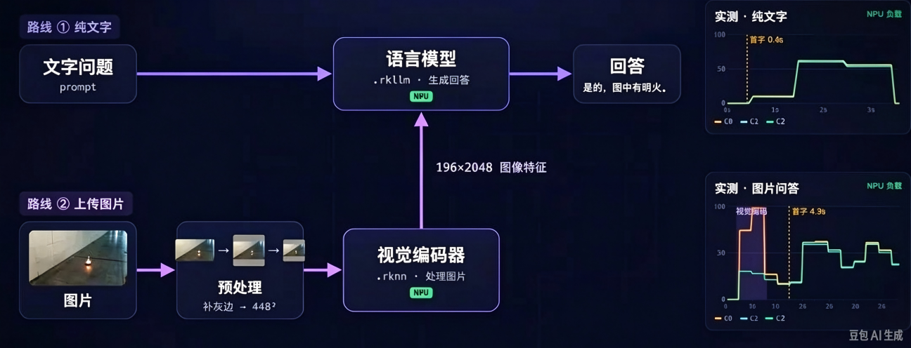

多模态语音情绪感知
EXP-05 让机器人听懂了"你说什么"，本实验补上最后一块拼图——"你是怎么说的"：文本情绪与语音韵律双通道并行分析、融合判情，让助手与客服应用具备情绪感知能力。
01问题引入：听懂"字面"还要听懂"语气"
设想客服机器人收到这句话——ASR 识别正确、意图分类正确，但场景翻车了：
字面：中性偏夸；语气：愤怒讽刺。
火上浇油，用户挂断投诉。
人听话时，字面与语气同时解码。
再看三个只有"单通道"会翻车的例子：
| 用户表现 | 只看文本 | 加上语音韵律 |
|---|---|---|
| "我没事"（哽咽、低音量、慢语速） | 判定：没事 | 判定：悲伤，需安抚 |
| "好的好的，快点吧！"（语速急、音量高） | 判定：配合 | 判定：不耐烦/愤怒前兆 |
| "太棒了……"（拖长、降调、无起伏） | 判定：开心 | 判定：无奈/失望（反讽） |
这套"多通道并行、汇入统一大脑"的思路在多模态模型里已经落地——下图是视觉语言模型（VLM）的两条输入路线：纯文字直接进语言模型，图片则先经预处理与视觉编码器提取特征，再与文本一起汇入语言模型生成回答。本实验把同样的架构换成"文本 + 语音韵律"双通道：

02原理通俗讲解：品酒师的两条舌头
把情绪识别想成品酒：好品酒师同时用两条线索——看酒标（成分表：文字）与品味（单宁、酸度、回甘：韵律）。只看酒标会把"干红"当成"干"，只凭味觉又抓不住年份品种。对应到技术：
| 生活比喻 | 技术模块 | 通俗解释 |
|---|---|---|
| 看酒标成分表 | 文本情绪通道 | 对 ASR 文本做六分类：积极 / 消极 / 中性 / 愤怒 / 开心 / 悲伤。入门用情感词典（"太棒了"+2、"烦死"-2），进阶交给 NLP 分类器。 |
| 品味：酸度高=尖锐 | 语音韵律通道 | 音高 F0 高而抖→激动或紧张；音量（能量）大→愤怒/兴奋；语速快→焦虑不耐烦，慢且停顿多→低落。 |
| 调酒师按比例勾兑 | 双模态融合 | 两条通道各出一个分数，加权合并：置信度高的通道话语权更大；或决策级——两通道投票一致才输出。 |
| 最终给酒打的星级 | 情绪标签 + 坐标 | 输出六分类标签，同时落到"效价-唤醒度"二维坐标：开心=正效价高唤醒，悲伤=负效价低唤醒。 |
回到整条语音管线（最后一站）：
16kHz 波形（韵律就藏在这里）
会话起点
ASR 文本 → 文本通道 ★
EXP-05 意图/槽位 + 情绪标签一起进上下文 ★
TTS 按情绪调语速音高（呼应 EXP-03 参数）
语音通道的三个特征怎么算（都是"每句话一段统计量"）：
| 特征 | 生活读法 | 典型信号 |
|---|---|---|
| 基频 F0（音高） | 嗓音"往上翘"还是"沉下去" | 均值升高 + 起伏大 → 激动/愤怒；压低变平 → 悲伤/压抑 |
| 音量 RMS（能量） | 说话"多大声" | 持续偏高 → 愤怒/兴奋；骤降 → 失落 |
| 语速（字率/停顿） | 说得多急、停多久 | 字率高停顿短 → 焦急；字率低长停顿 → 低落或迟疑 |
03关联知识点
积极 / 消极 / 中性 / 愤怒 / 开心 / 悲伤。可用情感词典+规则打分入门，也可接 NLP 分类器或让 LLM 按标签白名单输出。
基频 F0、音量 RMS、语速/停顿——从波形直接统计，不依赖语义；对录音增益与麦克风距离敏感，需归一化。
横轴效价（负→正），纵轴唤醒（低→高）：开心=(+,高)、愤怒=(−,高)、悲伤=(−,低)、平静=(中,低)，把离散标签连成连续空间。
分数级加权（w·text+(1−w)·voice）或决策级投票；冲突时（反话、反讽）可提高语音通道权重或标"低置信"交给人。
情绪标签随 context 进 LLM，让回复语气随之调整；TTS 端呼应 EXP-03 的 --speed/音高参数改变播报风格。
情感助手（陪伴、提醒时察言观色）、智能客服（升级投诉预警、安抚话术切换）——情绪是服务类机器人的核心 KPI。
04实验目标
- 掌握文本情绪分析：基于情感词典/规则对 ASR 文本输出积极/消极/中性/愤怒/开心/悲伤六类标签（分类实操）
- 理解文本分类与实体抽取同源——都属于把自然语言映射到受控词表（概念关联）
- 掌握语音情绪分析：从波形提取韵律、音量、语速特征并给出通道判情（特征实操）
- 实现双模态情绪融合：分数级加权可调，能演示文本/语音冲突样例的融合差异（融合实操）
- 能把情绪标签接入 EXP-05 的对话上下文，设计"情绪感知的助手/客服"应答策略（集成应用）
- 理解情绪输出与 TTS 播报风格的联动（衔接 EXP-03），完成闭环设计（迁移应用）
05实验环境与准备
| 类别 | 配置 |
|---|---|
| 硬件 | 具身智能实验箱 B2（RK3576）+ 讯飞六麦阵列（复用 EXP-01~02 录音链路） |
| 复用模块 | sherpa-onnx ASR（EXP-02 出文本）、llm_server/llm_test（EXP-05 出语义与标签）、Matcha-TTS（EXP-03 调风格） |
| 文本通道 | 情感词典（中文程度词/否定词/标点权重）+ 六分类白名单，Python 纯实现起步 |
| 语音通道 | 16kHz 单声道波形窗口（约 2~4s/句），统计 F0 近似、RMS 能量、字率与静音比 |
| 素材 | courses/sheet1/speech_practice/ 下实验讲义与样例（exp06 为设计性素材，需按课堂场景修改） |
# 0) 前置就绪检查（三站分别是 EXP-02 / EXP-05 主命令） python3 asr_test.py --mic-array # 文本通道原料：ASR 文本 python3 llm_test.py --prompt "你好" # LLM 连通（可承担 text 分类器） # 1) 录一段情绪样本（平静/愤怒/悲伤/开心 各 1 条） arecord -D plughw:4,0 -r 16000 -f S16_LE -c 1 -d 3 angry.wav
amixer（audio_utils.py 已有工具）固定采集增益再采样本。06动画讲解：双模态情绪融合
观察一句话的两条命运线：文本通道连到词典/分类器，语音通道抽出韵律三特征，两路分数在融合器按权重合并，最终落点在右侧"效价-唤醒度"情绪坐标上（4 秒循环，看紫色融合点的迁移轨迹）：
07互动讲解：情绪融合权重台
三个样例 + 两组权重，亲手复现"字面 vs 语气"冲突时融合结果如何翻转：
08实操步骤
步骤 1：采集四类样本（每类 3 条起，安静环境 + 远近各一条）：
arecord -D plughw:4,0 -r 16000 -f S16_LE -c 1 -d 3 samples/angry_01.wav arecord -D plughw:4,0 -r 16000 -f S16_LE -c 1 -d 3 samples/sad_01.wav # 真实语料优先用 EXP-02 链路边说边存：唤醒 → 朗读情绪句 → 得 (wav, text) 对
步骤 2：文本通道——程度词/否定词加权的情感词典打分（课堂实现骨架）：
LEX = {"棒": +2, "喜欢": +1.5, "烦": -2, "太": 1.5, "不": -1} def text_score(s): # 遍历命中词 → 前置程度词加倍、前置否定词取反 → clip 到 [-3, +3] # 分数段映射六类: >1.5 开心, >0.3 积极, >-0.3 中性, >-1.5 消极, >=愤怒词 愤怒, 否则 悲伤 # 或直接委托 LLM（白名单约束，承接 EXP-05 的 system prompt 手法）： "你是情绪标注员，只输出: 开心|悲伤|愤怒|积极|消极|中性"
步骤 3：语音通道——对样本波形统计三特征并归一化打分：
# F0 均值/方差（基频轨迹近似）、RMS 平均能量、字率与静音占比 # 归一化到该说话人基线后映射: 高能量+高语速 → 愤怒(+强度) # 低能量+慢语速+F0平 → 悲伤; 温和起伏 → 开心
步骤 4：融合与闭环——分数级加权后与 EXP-05/03 打通：
final = w*text + (1-w)*voice # 冲突(异号)则 confidence *= 0.5 # 标签写入 LLM 上下文 → 回复语气调整： "用户当前情绪:悲伤。回复更温和简短,先安抚再解决。" # 播报风格呼应 EXP-03 参数（稍慢、降增益）： python3 tts_test.py --text "别急，我们马上帮您处理。" --gain 1.5
09重点与易错点
| 现象 | 原因 | 解决 |
|---|---|---|
| 音量特征全部偏高，区分不出愤怒 | 录音增益/AGC 每次不同 | 固定 amixer 增益采样；RMS 用相对说话人基线而非绝对值 |
| "我没事"类逞强句全判中性 | 只用文本通道 | 文本空泛时提高语音权重；冲突即降置信并按韵律裁决 |
| 反讽"太棒了……"判成开心 | 词典无语气感知 | 结合降调/拖长（F0 下滑、语速↓）触发反讽规则或交给 LLM 综合裁决 |
| 否定句情感翻转错误（"不喜欢"） | 词典未处理否定窗口 | 否定词作用域覆盖其后 2-3 个词；双重否定取反后再取反 |
| 愤怒/开心召回极低 | 样本六类不平衡（中性占多数） | 每类等量采样；评测用 per-class 召回而非整体准确率 |
| 远近说话人分数不可比 | F0/能量未归一 | 按说话人做 z-score 归一，或会话首轮先"校准 5 秒"采基线 |
| 标签接进 LLM 后回复更怪了 | system prompt 冲突或标签写错位置 | 情绪标签放 messages[0] 人设之后，限定语气指引而非硬性台词 |
- 先做单通道各自可信的评测，再谈融合——融合救不了两个都不准的通道。
- 每个测试句固定"文本 + 波形"成对存档，回归测试时两通道一起复跑。
- 输出永远带置信度；低置信交由澄清话术（"听起来您有点着急，是吗？"）比硬猜更稳。
- 别忘了闭环：情绪的最终消费方是回复语气与 TTS 风格，而不是一张打印的表格。
10总结与思考
四类情绪样本库；文本六分类 + 韵律三特征双通道流水线；可调权重的分数级融合器；情绪标签接入 LLM 上下文的助手/客服 demo。
文本定类别、韵律定强度的互补关系；效价-唤醒度二维模型如何统一六标签；冲突降置信的融合安全观。
情感词典构建与否定/程度处理、声学特征归一化评测、按说话人基线校准、低置信澄清式交互设计。
至此 拾音→唤醒→识别→理解→回复→合成 六站全部点亮：机器人不仅听懂字面，还能听出语气、答得合时。
1. 双模态"分数级加权"与"决策级投票"两种融合策略各有何代价？当文本与韵律结论冲突（反讽/逞强）时，你的融合器应该输出什么而不仅仅是一个标签？
2. 若把情绪标签注入 system prompt 让 LLM 改变回复语气，可能引入哪些新问题（如过度讨好、误判放大）？如何用置信度门槛与澄清话术缓解？结合作感助手/客服场景说明。